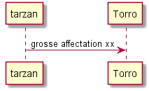
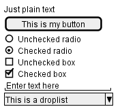
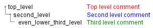

recap. Spinx 1
momo MY A
momo le B
momo C is C
Graph test !
Les grumeaux
recap. Spinx 1
Graph test !
View page source
Graph test !
un graphe 01



![@startuml
actor Utilisateur as user
participant "formSign.js" as form <<Contrôleur formulaire>>
participant "Sign.java" as controler <<(C,#ADD1B2) Contrôleur formulaire>>
participant "Secure.java" as secure <<(C,#ADD1B2) authentification>>
participant "Security.java" as security <<(C,#ADD1B2) sécurité>>
box "Application Web" #LightBlue
participant form
end box
box "Serveur Play" #LightGreen
participant controler
participant secure
participant security
end box
user -> form : submitSignIn()
form -> form : getParameters()
form -> form : result = checkFields()
alt result
form -> controler : formSignIn(email,pwd)
controler -> controler : result = checkFields()
alt result
controler -> secure : Secure.authenticate(email, pwd, true);
secure -> security : onAuthenticated()
security --> form : renderJSON(0);
form --> user : display main page
else !result
controler --> form : renderJSON(1)
form --> user : display error
end
else !result
form --> user : display error
end
@enduml](_images/plantuml-77c01c64b1ad32366da25946dc15b7b881e97f2c.png)
![@startuml
title Servlet Container
(*) --> "ClickServlet.handleRequest()"
--> "new Page"
if "Page.onSecurityCheck" then
->[true] "Page.onInit()"
if "isForward?" then
->[no] "Process controls"
if "continue processing?" then
-->[yes] ===RENDERING===
else
-->[no] ===REDIRECT_CHECK===
endif
else
-->[yes] ===RENDERING===
endif
if "is Post?" then
-->[yes] "Page.onPost()"
--> "Page.onRender()" as render
--> ===REDIRECT_CHECK===
else
-->[no] "Page.onGet()"
--> render
endif
else
-->[false] ===REDIRECT_CHECK===
endif
if "Do redirect?" then
->[yes] "redirect request"
--> ==BEFORE_DESTROY===
else
if "Do Forward?" then
-left->[yes] "Forward request"
--> ==BEFORE_DESTROY===
else
-right->[no] "Render page template"
--> ==BEFORE_DESTROY===
endif
endif
--> "Page.onDestroy()"
-->(*)
@enduml](_images/plantuml-7bcddc0fdf59cfbd5e5b7fad7b3d012831c49541.png)
![@startuml
title Authentication State Chart
[*] -u-> UILogin : User Data submitted via UI
[*] -d-> PTULogin : PTU data submitted via API
state UILogin {
UILogin : Entry / User Queried
UILogin : Exit / User Confirmed
state "Database" as userDatabase
state "Check Password" as userPassword
state "Failure" as userFailure
[*] -> userDatabase : Query for User
userDatabase -> userPassword : Valid User
userDatabase -u-> userFailure : Invalid User
userPassword -> [*] : Valid Password
userPassword -u-> userFailure : Invalid Password
}
state PTULogin {
PTULogin : Entry / PTU Queried
PTULogin : Exit / PTU Confirmed
state "Database" as PTUDatabase
state "Check Password" as PTUPassword
state "Failure" as PTUFailure
[*] -> PTUDatabase : Query for PTU
PTUDatabase -> PTUPassword : Valid PTU
PTUDatabase -u-> PTUFailure : Invalid PTU
PTUPassword -> [*] : Valid Password
PTUPassword -u-> PTUFailure : Invalid Password
}
@enduml](_images/plantuml-7ea42fece8337980b63749c5f4d36671c83b3ab9.png)